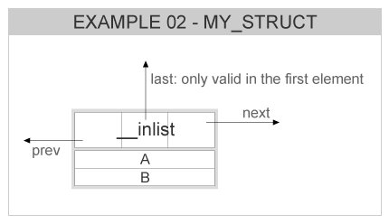
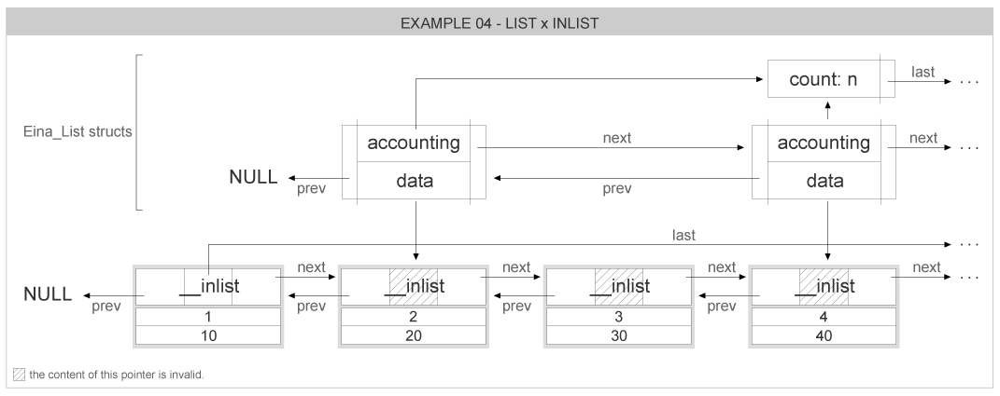

This example describes the usage of Eina_Inlist mixed with Eina_List . We create and add elements to an inlist, and the even members are also added to a normal list. Later we remove the elements divisible by 3 from this normal list.
The struct that is going to be used is the same used in Eina_Inlist basic usage , since we still need the EINA_INLIST macro to declare the inlist node info:
struct my_struct {
int a, b;
};
#define EINA_INLIST
Used for declaring an inlist member in a struct.
Definition: eina_inlist.h:411
The resulting node representing this struct can be exemplified by the following picture:

Now we need some pointers and auxiliary variables that will help us iterate on the lists:
struct my_struct *d, *cur;
int i;
Inlined list type.
Definition: eina_inlist.h:405
Type for a generic double linked list.
Definition: eina_list.h:318
Allocating 100 elements and putting them into an inlist, and the even elements also go to the normal list:
for (i = 0; i < 100; i++)
{
d = malloc(sizeof(*d));
d->a = i;
d->b = i * 10;
if ((i % 2) == 0)
}
#define EINA_INLIST_GET(Inlist)
Utility macro to get the inlist object of a struct.
Definition: eina_inlist.h:413
EINA_API Eina_Inlist * eina_inlist_append(Eina_Inlist *list, Eina_Inlist *new_l)
Adds a new node to end of a list.
Definition: eina_inlist.c:227
EINA_API Eina_List * eina_list_prepend(Eina_List *list, const void *data)
Prepends the given data to the given linked list.
Definition: eina_list.c:618
After this point, what we have are two distinct lists that share some elements. The first list (inlist) is defined by the pointers inside the elements data structure, while the second list (normal list) has its own node data structure that is kept outside of the elements.
The two lists, sharing some elements, can be represented by the following picture:

Accessing both lists is done normally, as if they didn't have any elements in common:
printf("inlist=%p\n", inlist);
printf("\ta=%d, b=%d\n", cur->a, cur->b);
printf("list=%p\n", list);
printf("\ta=%d, b=%d\n", cur->a, cur->b);
EINA_API unsigned int eina_inlist_count(const Eina_Inlist *list)
Gets the count of the number of items in a list.
Definition: eina_inlist.c:448
#define EINA_INLIST_FOREACH(list, it)
Definition: eina_inlist.h:832
static unsigned int eina_list_count(const Eina_List *list)
Gets the count of the number of items in a list.
#define EINA_LIST_FOREACH(list, l, _data)
Definition for the macro to iterate over a list.
Definition: eina_list.h:1415
We can remove elements from the normal list, but we just don't free them because they are still stored in the inlist:
{
if ((cur->a % 3) == 0)
}
#define EINA_LIST_FOREACH_SAFE(list, l, l_next, data)
Definition for the macro to iterate over a list with support for node deletion.
Definition: eina_list.h:1526
EINA_API Eina_List * eina_list_remove_list(Eina_List *list, Eina_List *remove_list)
Removes the specified list node.
Definition: eina_list.c:786
To finish this example, we want to free both lists, we can't just free all elements on the second list (normal list) because they are still being used in the inlist. So we first discard the normal list without freeing its elements, then we free all elements in the inlist (that contains all elements allocated until now):
while (inlist)
{
struct my_struct);
free(aux);
}
#define EINA_INLIST_CONTAINER_GET(ptr, type)
Utility macro to get the container object of an inlist.
Definition: eina_inlist.h:415
EINA_API Eina_Inlist * eina_inlist_remove(Eina_Inlist *list, Eina_Inlist *item)
Removes node from list.
Definition: eina_inlist.c:335
EINA_API Eina_List * eina_list_free(Eina_List *list)
Frees an entire list and all the nodes, ignoring the data contained.
Definition: eina_list.c:823
Here is the full source code for this example: eina_inlist_02.c Eina_Inlist advanced usage - lists and inlists source